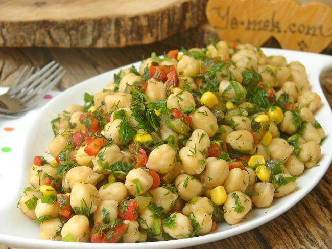

Yemek Tariflerine Hoş Geldiniz
Nohut Salatası
Malzemeler
- 2 su bardağı haşlanmış nohut
- 1 adet kırmızı kapya biber
- 1 adet salatalık
- 1 küçük kırmızı soğan
- 1-2 dal taze soğan
- Yarım demet maydanoz
- Yarım demet dereotu (isteğe bağlı)
- 1 adet limonun suyu
- 3-4 yemek kaşığı zeytinyağı
- Tuz, karabiber, pul biber
Yapılışı
- Haşlanmış nohutları geniş bir kaba alın.
- Kırmızı biber, salatalık ve soğanı küçük küpler halinde doğrayın.
- Maydanoz ve dereotunu ince kıyın.
- Doğradığınız tüm malzemeleri nohudun üzerine ekleyin.
- Ayrı bir kapta limon suyu, zeytinyağı, tuz ve baharatları karıştırıp salatanın üzerine dökün.
- İyice harmanlayıp servis tabağına alın.
👉 İsteğe göre içine mısır, domates, zeytin ya da beyaz peynir de ekleyebilirsiniz.